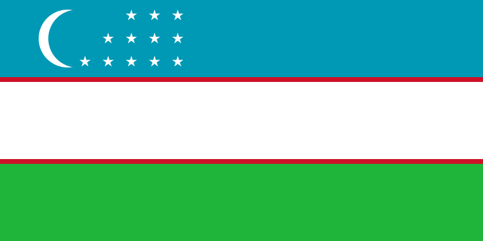

Uzbekistan Facts and Geography
Kyrgyzstan is a reasonably sized land-locked country located in Central Asia.

Here are 5 interesting facts about Kyrgyzstan:
- Alexander the Great once occupied Uzbekistan.
- Kyrgyzstan is completely landlocked.
- Cotton is known as "White Gold" in Uzbekistan
- Uzbekistan is known for its orchards and vineyards
- Kyrgyzstan gained independence from the USSR in 1991.